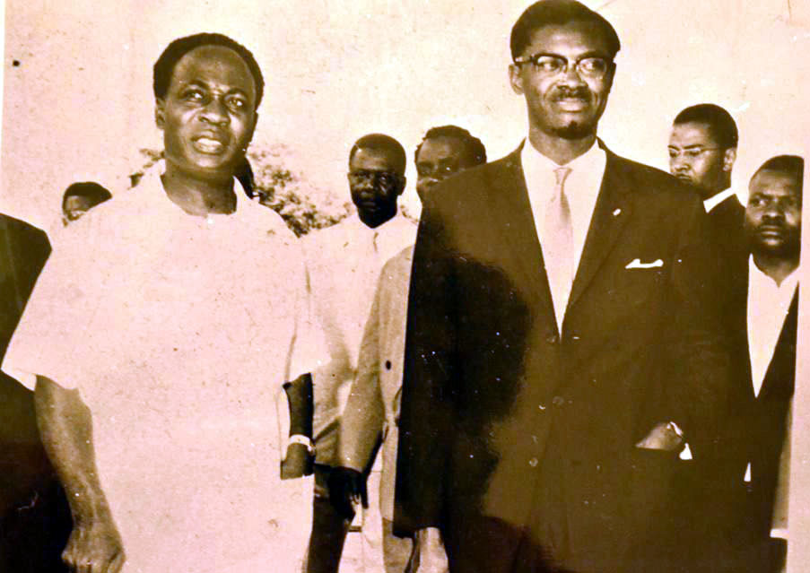

Dr Kwame Nkrumah

Kwame Nkrumah and Patrice Lumumba, leaders who staunchly
believed that Africans must own and control Africa’s resources.
Both were overthrown by CIA-instigated coups; Lumumba was even
brutally murdered by local agents of Western imperialism
/Photo: Kwame Nkrumah Pan-African Centre
A LITTLE ABOUT THE LIFE OF DR KWAME NKRUMAH
1909 - Dr Kwame Nkrumah was born
in Nkroful in the Gold Coast.
1947 - 1949 - He joined the United Gold Coast Convention Party
1949-1966 - He headed the Convention Peoples Party.
1960 - He became the first Prime minister of Ghana.
1961 - He became the first president of Ghana.
1972 - Dr Kwame Nkrumah died in Guinnea.
Please do well to read more about Dr Kwame Nkrumah on wikipedia